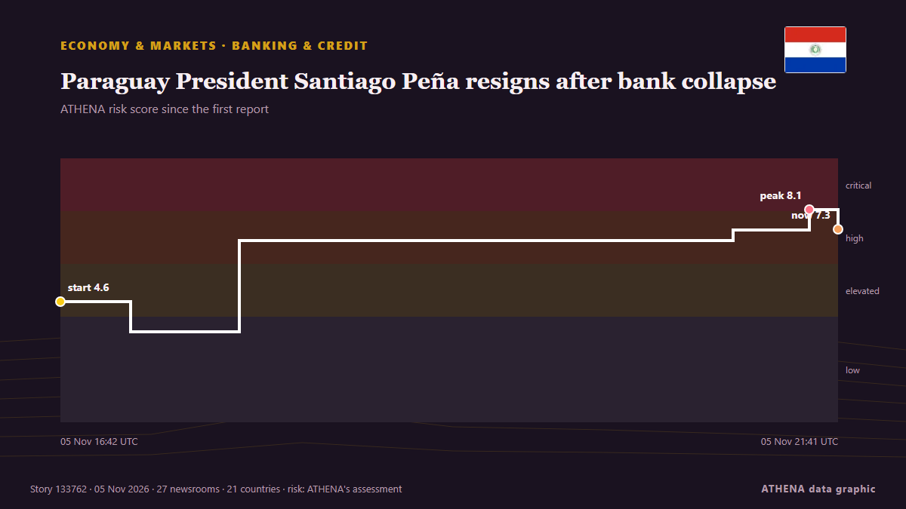

Paraguay President Santiago Peña resigns after bank collapse

The move follows a bank collapse and after the lower house of congress voted in favour of pursuing an impeachment trial against him. από BBC News
Αναφέρθηκε ανεξάρτητα από 32 μέσα σε 23 χώρες από τις 5 Νοε, πρώτο το Euronews English· η κάλυψη εξασθενεί. Το ATHENA εκτιμά τον κίνδυνο υψηλό (7.3/10), κυρίως λόγω της σοβαρότητάς του και της εμβέλειάς του. Βεβαιότητα 88% (υψηλή): το επιβεβαιώνουν 32 ανεξάρτητα μέσα, μέση αξιοπιστία 75%. Μέσα ανά χώρα: Ηνωμένες Πολιτείες (6), Γαλλία (5), Σιγκαπούρη (2). Κάλυψη: 5 Νοε έως 5 Νοε, 9 ώρες.
Γιατί έχει σημασία: Οι οικονομικές εξελίξεις και οι εξελίξεις στις αγορές περνούν στις τιμές, στην απασχόληση, στο κόστος δανεισμού και στις επενδύσεις.
Τι άλλαξε: 39 νέες αναφορές από 33 μέσα στο 24ωρο έως 5 Νοε.
Πρώτη διατύπωση: Paraguay President Peña resigns under mounting pressure from bank collapse
Οι τίτλοι των ειδήσεων παρουσιάζονται στα αγγλικά, όπως δημοσιεύτηκαν.
Με μια ματιά
Επιλέγεται, βαθμολογείται και γράφεται από τη δημοσιευμένη μεθοδολογία του ATHENA. Κανένας συντάκτης δεν παρεμβαίνει σε μεμονωμένα γεγονότα. Πώς παράγεται ›
| 05 Nov 14:38 UTC | 2 |
|---|---|
| 05 Nov 15:38 UTC | 3 |
| 05 Nov 16:38 UTC | 13 |
| 05 Nov 17:38 UTC | 6 |
| 05 Nov 18:38 UTC | 5 |
| 05 Nov 19:38 UTC | 4 |
| 05 Nov 20:38 UTC | 2 |
| 05 Nov 21:38 UTC | 3 |
| 05 Nov 22:38 UTC | 1 |
| 05 Nov 16:42 UTC | 4.6 |
|---|---|
| 05 Nov 17:09 UTC | 3.4 |
| 05 Nov 17:50 UTC | 6.9 |
| 05 Nov 21:00 UTC | 7.3 |
| 05 Nov 21:30 UTC | 8.1 |
| 05 Nov 21:41 UTC | 7.3 |
| 05 Nov 23:16 UTC | 7.3 |
Γιατί αυτοί οι αριθμοί
Σημασία
Κίνδυνος
Βεβαιότητα
Η κάλυψη — ποιος το ανέφερε και πότε
ο τίτλος όπως δημοσιεύτηκε · ανοίγει το πρωτότυπο- Euronews English · ΓαλλίαUeno Bank collapse sparks political crisis and impeachment move in Paraguay
- Euronews English · ΓαλλίαUeno Bank collapse in Paraguay prompts President Santiago Peña to resign
- The Straits Times · ΣιγκαπούρηParaguay President Pena resigns under mounting pressure from bank collapse
- DW English · ΓερμανίαParaguay: President Pena resigns amid bank crisis
- Buenos Aires Times · ΑργεντινήParaguay's President Santiago Peña resigns amid banking scandal
- TASS (English) · ΡωσίαOpposition accuses Paraguay's president of illicit enrichment after bank collapse
- TASS (English) · ΡωσίαParaguay’s president resigns after Ueno Bank crash
- Asharq Al-Awsat (English) · Σαουδική ΑραβίαParaguay President Resigns Following Bank Collapse
- Al Jazeera English · ΚατάρParaguay President Pena resigns in wake of bank collapse
- Colombia One · ΚολομβίαParaguay’s President Santiago Peña Resigns Following Banking Collapse
- Le Monde (English) · ΓαλλίαParaguay's president resigns amid banking scandal
- BBC News · Ηνωμένο ΒασίλειοParaguay President Santiago Peña resigns after bank collapse
- The Rio Times · ΒραζιλίαParaguay’s President Peña Resigns Over Bank
- TRT World · ΤουρκίαParaguay's Pena resigns under mounting pressure from bank collapse
- Anadolu Agency (English) · ΤουρκίαParaguay's lower house approves impeachment of president despite resignation
- CBC News (alternative feed) · ΚαναδάςProsecutor seeks charges against Paraguay's president Santiago Peña following bank collapse
- France 24 English · ΓαλλίαParaguay's president Peña impeached moments after resigning over banking scandal
- Cointelegraph · Ηνωμένες ΠολιτείεςParaguay president resigns after collapse of Ueno digital bank
- APA (English) · ΑζερμπαϊτζάνParaguay President Santiago Peña resigns after bank collapse
- China Daily — page reader · ΚίναParaguayan president resigns following bank collapse
- Livemint · ΙνδίαParaguay President Santiago Peña impeached after Ueno Bank collapse freezes millions in savings, sparks protests
- NPR World · Ηνωμένες ΠολιτείεςParaguay's president is impeached minutes after resigning following a bank collapse
- Stuff · Νέα ΖηλανδίαParaguayan president impeached minutes after resigning following bank collapse
- The Rio Times · ΒραζιλίαParaguay Lawmakers Spare Next President
- The Guardian · Ηνωμένο ΒασίλειοParaguay’s president quits after millions of people’s savings frozen in bank crisis
- Euronews English · ΓαλλίαParaguayan president resigns amid bank collapse leaving 3M people without access to bank accounts
- Breaking Belize News · ΜπελίζInternational News: Paraguayan President Santiago Peña resigns amid banking crisis
- The Straits Times · ΣιγκαπούρηExplainer: What is ueno bank and how did it trigger Paraguay’s political crisis?
- Jamaica Observer · ΤζαμάικαParaguay president resigns as millions unable to access money, pension and healthcare in bank collapse
- Punch · ΝιγηρίαParaguay president resigns after bank takeover sparks protests
- Times of India · ΙνδίαParaguay president quits amid banking scandal as lawmakers move to impeach him
- People Daily · ΚένυαParaguay President Santiago Peña resigns after bank collapse sparks protests
- Responsible Statecraft · Ηνωμένες ΠολιτείεςParaguay's Trump-aligned president resigns amid bank crisis
- The New York Times (World) · Ηνωμένες ΠολιτείεςParaguay’s President, Santiago Peña, Quits Amid Ueno Bank Scandal
- Bangkok Post — page reader · ΤαϊλάνδηParaguay president resigns amid banking scandal
- MercoPress · ΟυρουγουάηParaguay’s Santiago Peña tenders his resignation, but Congress presses ahead with impeachment
- Decrypt · Ηνωμένες ΠολιτείεςBitcoin Fixes This? Paraguay President Resigns After Bank Lockout Hits 60% of Country
- PBS NewsHour · Ηνωμένες ΠολιτείεςParaguay prosecutor will seek charges against embattled president after bank collapse